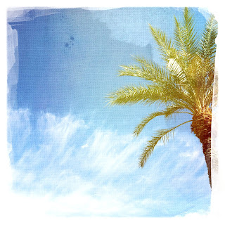

Recovered weblog entry
Postcard friendly

As is ritual for me during my lunch hour, I spent half of it eating, and the other half walking the grounds of the mall in which I work. I snapped 14 pictures along the way. I returned inside to look at them. I always hope for that gem; the one print that says something to me, or the one that looks brilliant, despite the circumstances. None of the 14 yesterday really did, though. But after showing a friend at work, he and I both agreed that this one fit the cliche postcard look nicely enough. And since it's been several days since I've posted, it made the cut. So, enjoy the exposure, little palm-tree-with-wispy-clouds picture. You wouldn't have made it on any other day. Lens: Buckhorst H1
Film: DreamCanvas